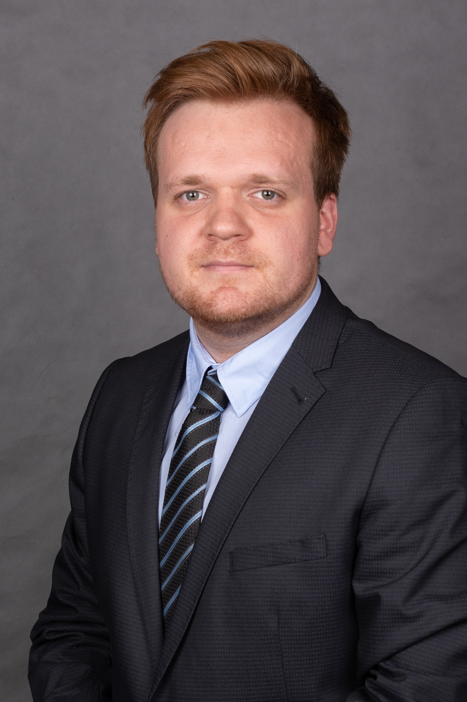
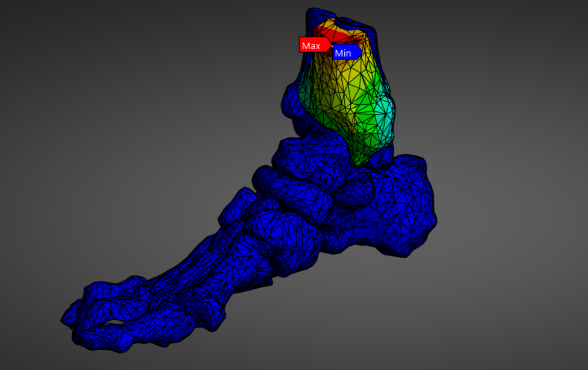
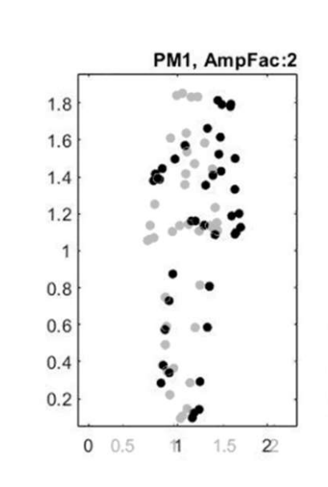
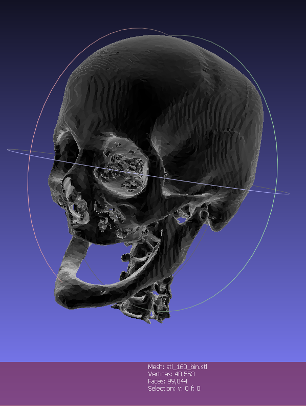
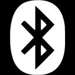

Ha felkelkeltettem az érdeklődésedet, akkor a form kitöltésével kapcsolatba!

Jelenleg a Budapesti Műszaki és Gazdasági Egyetem Villamosmérnöki és Informatikai karának egészségügyi mérnök hallgatója vagyok. Hallgatói létem alatt siketült megismerkednem a C++, MATLAB, C nyelvekkel és felhasználói szinten tudom őket kezelni. Az utóbbi időben egy szimulációval foglalkoztam (Ansys), melyben a bokaízület komplexum károsodását vizsgálom. Angol nyelven felsőfokon beszélek, illetve rendelkezem jogosítvánnyal. Szeretek csapatban dolgozni és szorgalmas vagyok. Szeretek sportolni, főleg csapatsportokat. Hobbiaim közé tartoznak a stratégiai játékok, illetve kis Arduino projektek gyártása.
Automatizálási mérnök gyakornok
2023, 2025-2026, 9 hónap
Mérnök gyakornok
2025, 6 hónap
egészségügyi mérnök MSc
2026-
mechatronikai mérnöki BSc, MSc
2020-2024, 2024-2026
érettségi: informatikából és matematikából emelt szinten
2008-2020

A munkám során CT felvételből olyan végeselem csontmodellt hoztam létre, amelyen modellezve az ízfelszíneket, szalagokat, ínakat statikus és dinamikus terheléset vizsgáltam. A projekt folytatódik, ütésszerű terhelésekkel és nemlineáris anyagokmodellekkel.

A vizsgálatom során Kísérletes módszerrel mozgásvizsgálatot (egyirányú erőimpulzus hatására létrejövő mozgásvizsgálatot) hajtottam végre, melyben a mérésben részt vevő személyek testi koordinátáit MoCap rendszerrel vettem fel. A vizsgálatom célja kideríteni, hogy prediktálható-e az elesés, van-e olyan bizonyos mozgása a testnek, amely hatására az elesés elkrülhetetlen.

Ebben a projektben egy koponya CT felvételsorozatot olvastam be, majd mentettem ki egy 3D formátumban. Ezek után Végeselem szimulációt hajtottam rajta végre.

Ebben a feladatban egy mikrovezérlő segítségével bluetoot kommunikációt hoztunk létre. A mikrovezérlőre helyeztünk szenzorokat és ezeket a jeleket továbbítottuk egy számítógép felé.